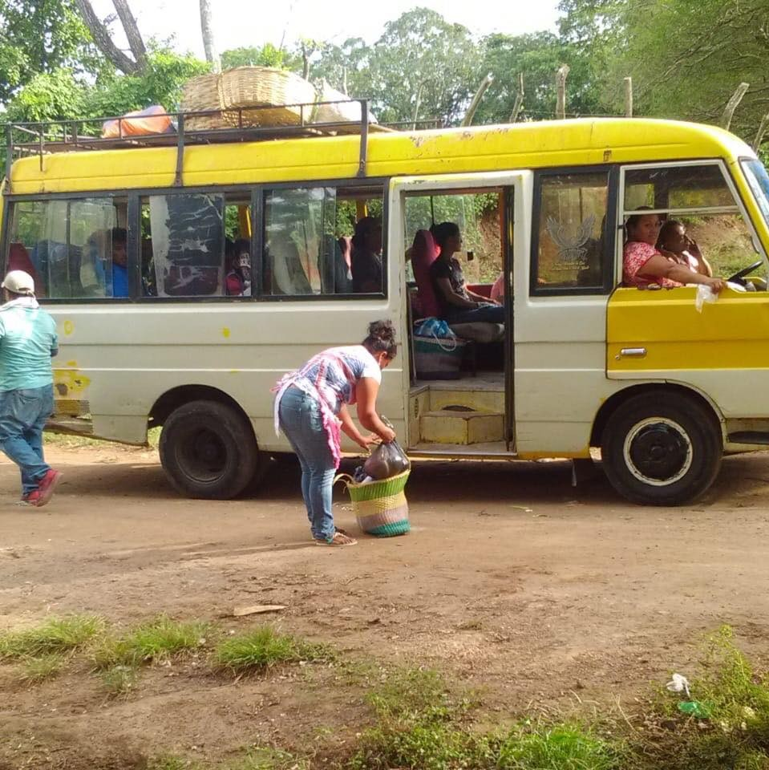

Consecuencias de un bus en mal estado.
1-Aumento del riesgo de accidentes.
2-Mayor contaminación.
3- Tardanza en los diferentes labores, que conlleva la toma de buses en mal estado.
4-Aumento de la tarifa del transporte para subsidiar emprevisto del bus.
